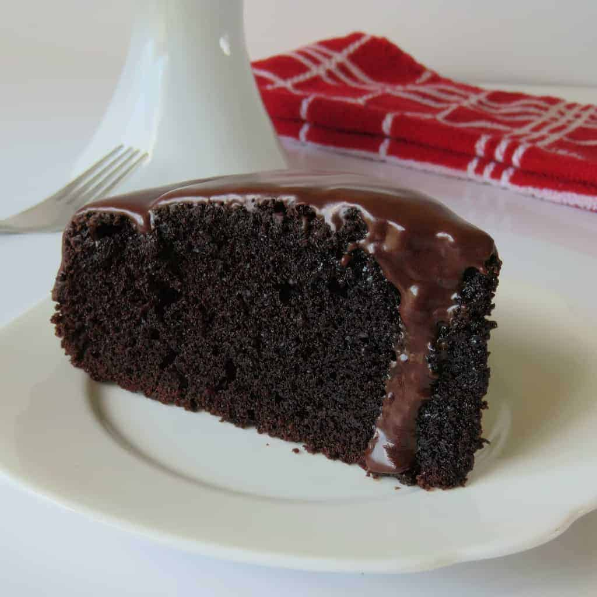

Chocolate Cake!!
Home

Chocolate Cake Recipe
This chocolate cake recipe will leave your mouth covered brown
- Preheat oven to 180°C bake. Grease and line a high-sided 20cm round cake tin.
- Mix together the Edmonds Standard Grade Flour, cocoa, Edmonds Baking Powder and Chelsea White Sugar.
- In separate bowl, melt the butter and Chelsea Golden Syrup together (about 1 minute on high in the microwave usually does it).
- In another bowl whisk the eggs, then whisk in the Meadow Fresh Original Milk, Edmonds Baking Soda and vanilla. Add both the butter mix and the egg/milk mix to dry ingredients and beat on medium for 1 minute.
- Spoon into prepared tin and level the surface. Bake for 50-60 minutes, until the top of the cake bounces back when lightly pressed and a skewer inserted into the centre comes out clean. Cool in tin for 10-15 minutes, then transfer to a wire rack to cool completely.
Other Recipes
Cookies
Scones